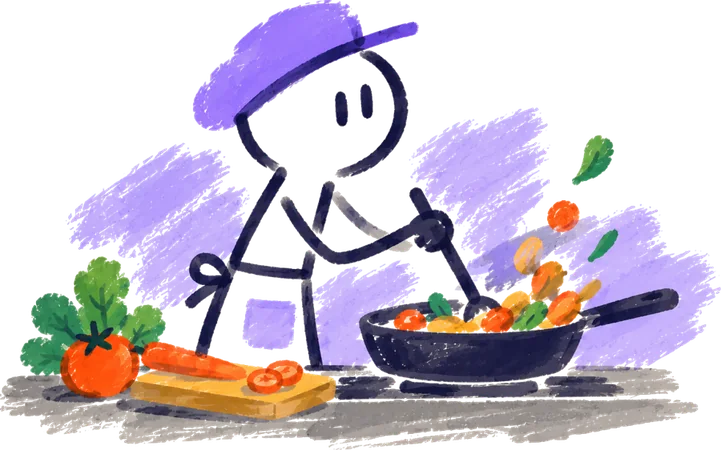

Recettes
{{ subtitle }}
Aucune recette ne correspond.
Essaie un autre mot, ou crée la recette.
!
{{ t.name }}{{ t.ingLabel }}
Ingrédients{{ sel.ingCount }}
- {{ i.name }}
{{ i.qty }}
Préparation
- {{ st.n }}{{ st.text }}
Réglages
Famille MartinConnecté sur cet appareil